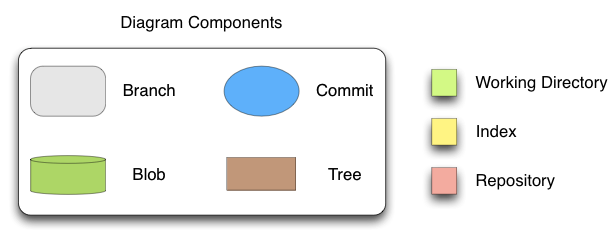

About this project
It is unthinkable to think about the world of software with no version control systems. Git was born in 2005 and since then it is having a great success. The problem is that there are not any formal or even informal specification about its internals. With this manual, we try to give a semi-formal specification about git and explain the behavior of some operations. The manual is based on a model built by us using a modeling tool called Alloy.
Structure of the manual
This reports starts by explaining the organization of git, how it is structured and then we cover each component of git: working directory, index and repository. For matters of time/space and complexity we focus the object model in the index and in the repository. After the presentation of the structure we give the semi-formal specification of some operations. We finish the report with the analysis of some properties.For a more intuitive explanation, diagrams will be used following the convention specified in following figure.
 Figure 1
Authors and Contributors
This project was developed by Cláudio Lourenço and Renato Neves. It was also supervised by Alcino Cunha, Eunsuk Kang and José Barros.